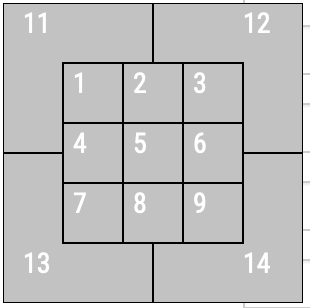
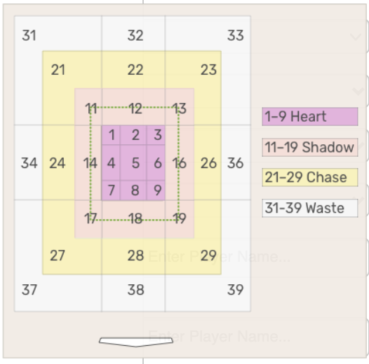

Documentation¶
Python Package¶
- pycobb.get(player_type='pitcher', min_results=0, group_by='name', columns=None, sort_col='pitches', player_event_sort='pitch_number_thisgame', sort_order='desc', min_pas=0, type='details', **kwargs)¶
Get Pandas DataFrame of pitch data given the specified search parameters.
- Parameters
pitchers – List of MLB IDs (int) or Player Names (str)
batters – List of MLB IDs (int) or Player Names (str)
pitch_types – List of ‘Pitch Types’_ (str)
years – List of years (int) to be searched
columns – List of specified Columns to return in Pandas DataFrame
date_range – List of two dates to be searched between (i.e.
["2020-08-01", "2020-09-01"])pa_result – List of PA Results
game_type – List of Game Types
pitch_result – List of Pitch Results
gameday_zone – List of Gameday Zones (int between 1-14)
stadium – List of Stadium Codes (str), found from Teams
batted_ball_location – List of Batted Ball Locations (int from 1-9)
attack_zone – List of Attack Zones (int)
batted_ball_direction – List of Batted Ball Directions (str, options:Pull, Straightaway, Opposite)
count – List of Counts (str)
situation – List of Situations (str)
player_type – List of Player Type (str) (i.e. Pitcher, Batter, or fielder_6 (for SS))
outs – (int) 0, 1, or 2 (obviously)
opponent – Teams Abbreviation for the opposing team of the Pitcher
American+LeagueorNational+Leaguepitcher_throws –
'R'or'L'(str)batter_stands –
'R'or'L'(str)quality_of_contact – (int) from 1-6 indicating Quality of Contact
if_alignment – List of Codes (int) from 1-3 indicating IF Alignment
team – Teams Abbreviation for the team of the Pitcher. Can also be
American+LeagueorNational+Leagueposition – Position (str) (i.e. IF, OF, SP, RP, or Fielder Number)
of_alignment – List of Codes (int) from 1-4 indicating OF Alignment
runners_on – Code (int) from 1-9 indicating Runners On
home_or_away –
'Home'or'Away'of Pitcher’s teamflags – Special Flags (str) for the pitch
batted_ball_type – List of Batted Ball Types (options: fly ball, popup, line drive, ground ball)
inning – Integer… duh
Python Usage:
>>> import pycobb >>> pycobb.get(pitchers=["Clayton+Kershaw"], years=["2020"], pitch_types=['CH']) pitch_type game_date release_speed release_pos_x ... of_fielding_alignment spin_axis delta_home_win_exp delta_run_exp 0 CH 2020-10-15 87.4 1.44 ... Standard 219 0.0 0.051 1 CH 2020-10-15 86.7 1.42 ... Standard 218 0.0 -0.050 2 CH 2020-08-08 87.8 1.79 ... Standard 143 0.0 0.020 3 CH 2020-08-08 86.0 1.66 ... Standard 142 0.0 0.020 [4 rows x 92 columns]
CLI Usage:
> pycobb get -p Clayton+Kershaw -y 2020 -t CH
- pycobb.get_player_ids(player_info)¶
Returns a list of MLB IDs given specified player information.
- Parameters
player_info – List or dictionary
Usage:
>>> import pycobb >>> search = {"name_first":"Ty","name_last":"Cobb"} >>> pycobb.get_player_ids(search) 112431
- pycobb.update(save=True)¶
Update local players.csv file using data from the Chadwick Baseball Bureau
- Parameters
save – (optional) Chose to save the update locally
Usage:
>>> import pycobb >>> pycobb.update()
Command Line Interface¶
Get Pitch Data from Baseball Savant directly from the command line
Usage:
> pycobb -h
Positional Arguments:
{run,update,test} Command to be Run
Optional Arguments:
-h, --help show this help message and exit
-s SAVE, --save SAVE save data to a specified file path
-d DATE_RANGE DATE_RANGE
range of dates to be searched i.e. 2021-05-03 2021-05-08
-p PITCHERS [PITCHERS ...]
list of pitchers to search (MLB ID or name). ex: -p 124692 506433 or -p Cy+Young Yu+Darvish
-b BATTERS [BATTERS ...]
list of batters to search (MLB ID or name): ex: -b 112431 116539 or -b Ty+Cobb Derek+Jeter
-t PITCH_TYPES [PITCH_TYPES ...]
list of pitch types. e.g. -t FT CU
-y YEARS [YEARS ...] values or range of years
-c COLUMNS [COLUMNS ...]
Columns to return
--team TEAM Team code of pitcher
--opp OPPONENT Team code of pitcher opponent
--print Print the dataframe when complete
--plot xaxis yaxis Plot the values of two columns
Columns¶
Column |
Description |
Type |
|---|---|---|
pitch_type |
The type of pitch derived from Statcast. |
str |
game_date |
Date of the Game. |
str |
release_speed |
Pitch velocities from 2008-16 are via Pitch F/X and adjusted to roughly out-of-hand release point. |
float |
release_pos_x |
Horizontal Release Position of the ball measured in feet from the catcher’s perspective. |
float |
release_pos_z |
Vertical Release Position of the ball measured in feet from the catcher’s perspective. |
float |
player_name |
Player’s name tied to the event of the search. |
str |
batter |
MLB Player Id tied to the play event. |
float |
pitcher |
MLB Player Id tied to the play event. |
float |
events |
Event of the resulting Plate Appearance. |
str |
description |
Description of the resulting pitch. |
str |
spin_dir |
|
float |
spin_rate_deprecated |
|
float |
break_angle_deprecated |
|
float |
break_length_deprecated |
|
float |
zone |
Zone location of the ball when it crosses the plate from the catcher’s perspective. |
Int64 |
des |
Plate appearance description from game day. |
str |
game_type |
Type of Game. E = Exhibition |
str |
stand |
Side of the plate batter is standing. |
str |
p_throws |
Hand pitcher throws with. |
str |
home_team |
Abbreviation of home team. |
str |
away_team |
Abbreviation of away team. |
str |
type |
Short hand of pitch result. |
str |
hit_location |
Position of first fielder to touch the ball. |
Int64 |
bb_type |
Batted ball type |
str |
balls |
Pre-pitch number of balls in count. |
Int64 |
strikes |
Pre-pitch number of strikes in count. |
Int64 |
game_year |
Year game took place. |
Int64 |
pfx_x |
Horizontal movement in feet from the catcher’s perspective. |
float |
pfx_z |
Vertical movement in feet from the catcher’s perpsective. |
float |
plate_x |
Horizontal position of the ball when it crosses home plate from the catcher’s perspective. |
float |
plate_z |
Vertical position of the ball when it crosses home plate from the catcher’s perspective. |
float |
on_3b |
Pre-pitch MLB Player Id of Runner on 3B. |
Int64 |
on_2b |
Pre-pitch MLB Player Id of Runner on 2B. |
Int64 |
on_1b |
Pre-pitch MLB Player Id of Runner on 1B. |
Int64 |
outs_when_up |
Pre-pitch number of outs. |
Int64 |
inning |
Pre-pitch inning number. |
Int64 |
inning_topbot |
Pre-pitch top or bottom of inning. |
str |
hc_x |
Hit coordinate X of batted ball. |
float |
hc_y |
Hit coordinate Y of batted ball. |
float |
tfs_deprecated |
|
float |
tfs_zulu_deprecated |
|
float |
fielder_2 |
MLB Player Id for catcher. |
Int64 |
vx0 |
The velocity of the pitch in feet per second in x-dimension determined at y=50 feet. |
float |
vy0 |
The velocity of the pitch in feet per second in y-dimension determined at y=50 feet. |
float |
vz0 |
The velocity of the pitch in feet per second in z-dimension determined at y=50 feet. |
float |
ax |
The acceleration of the pitch in feet per second per second in x-dimension determined at y=50 feet. |
float |
ay |
The acceleration of the pitch in feet per second per second in y-dimension determined at y=50 feet. |
float |
az |
The acceleration of the pitch in feet per second per second in z-dimension determined at y=50 feet |
float |
sz_top |
Top of the batter’s strike zone set by the operator when the ball is halfway to the plate. |
float |
sz_bot |
Bottom of the batter’s strike zone set by the operator when the ball is halfway to the plate. |
float |
hit_distance |
Projected hit distance of the batted ball. |
float |
hit_distance_sc |
Projected hit distance of the batted ball. |
float |
launch_speed |
Exit velocity of the batted ball as tracked by Statcast. |
float |
launch_angle |
Launch angle of the batted ball as tracked by Statcast. |
float |
effective_speed |
Derived speed based on the the extension of the pitcher’s release. |
float |
release_spin |
Spin rate of pitch tracked by Statcast. |
float |
release_spin_rate |
Spin rate of pitch tracked by Statcast. |
float |
release_extension |
Release extension of pitch in feet as tracked by Statcast. |
float |
game_pk |
Unique Id for Game. |
Int64 |
fielder_3 |
MLB Player Id for 1B. |
Int64 |
fielder_4 |
MLB Player Id for 2B. |
Int64 |
fielder_5 |
MLB Player Id for 3B. |
Int64 |
fielder_6 |
MLB Player Id for SS. |
Int64 |
fielder_7 |
MLB Player Id for LF. |
Int64 |
fielder_8 |
MLB Player Id for CF. |
Int64 |
fielder_9 |
MLB Player Id for RF. |
Int64 |
release_pos_y |
Release position of pitch measured in feet from the catcher’s perspective. |
float |
estimated_ba_using_speedangle |
Estimated Batting Avg based on launch angle and exit velocity. |
float |
estimated_woba_using_speedangle |
Estimated wOBA based on launch angle and exit velocity. |
float |
woba_value |
wOBA value based on result of play. |
float |
woba_denom |
wOBA denominator based on result of play. |
float |
babip_value |
BABIP value based on result of play. |
float |
iso_value |
ISO value based on result of play. |
float |
launch_speed_angle |
Launch speed/angle zone based on launch angle and exit velocity. |
float |
at_bat_number |
Plate appearance number of the game. |
Int64 |
pitch_number |
Total pitch number of the plate appearance. |
Int64 |
pitch_name |
The name of the pitch derived from the Statcast Data. |
str |
home_score |
Pre-pitch home score |
Int64 |
away_score |
Pre-pitch away score |
Int64 |
bat_score |
Pre-pitch bat team score |
Int64 |
fld_score |
Pre-pitch field team score |
Int64 |
post_home_score |
Post-pitch home score |
Int64 |
post_away_score |
Post-pitch away score |
Int64 |
post_bat_score |
Post-pitch bat team score |
Int64 |
post_fld_score |
Post-pitch fielding team score |
Int64 |
if_fielding_alignment |
Infield fielding alignment at the time of the pitch. |
str |
of_fielding_alignment |
Outfield fielding alignment at the time of the pitch. |
str |
spin_axis |
The Spin Axis in the 2D X-Z plane in degrees from 0 to 360 |
Int64 |
delta_home_win_exp |
The change in Win Expectancy before the Plate Appearance and after the Plate Appearance |
float |
delta_run_exp |
The change in Run Expectancy before the Pitch and after the Pitch |
float |
Glossary¶
Player Names¶
Players can be specified using their MLB ID (i.e. 477132) or their full name as
a string, separated by either a ‘+’ or a space (i.e. "Clayton Kershaw" or
“Clayton+Kershaw”)
Pitch Types¶
Pitch Code |
Pitch Name |
|---|---|
FF |
4-Seam Fastball |
FT |
2-Seam Fastball |
FC |
Cutter |
SI |
Sinker |
FS |
Splitter |
SL |
Slider |
CH |
Changeup |
CU |
Curveball |
KC |
Knuckle Curve |
CS |
Slow Curve |
KN |
Knuckleball |
FO |
Forkball |
EP |
Eephus |
SC |
Screwball |
IN |
Intentional Ball |
PO |
Pitch Out |
AB |
Automatic Ball |
UN |
Unkown |
PA Results¶
Options |
|---|
single |
double |
triple |
home_run |
field_out |
strikeout |
strikeout_double_play |
walk |
double_play |
field_error |
grounded_into_double_play |
fielders_choice |
fielders_choice_out |
batter_interference |
catcher_interf |
caught_stealing_2b |
caught_stealing_3b |
caught_stealing_home |
force_out |
hit_by_pitch |
intent_walk |
sac_bunt |
sac_bunt_double_play |
sac_fly |
sac_fly_double_play |
triple_play |
Game Types¶
Code |
Name |
|---|---|
R |
Regular Season |
PO |
Playoffs |
F |
Wildcard |
D |
Division Series |
L |
League Championship |
W |
World Series |
S |
Spring Training |
Pitch Results¶
Options |
|---|
automatic ball |
ball |
blocked ball |
called strike |
foul |
foul bunt |
foul pitchout |
pitchout |
hit by pitch |
intent ball |
hit into play |
hit into play no out |
hit into play score |
pitchout hit into play score |
missed bunt |
foul tip |
swinging pitchout |
swinging strike |
swinging strike blocked |
Gameday Zones¶
{kind=link}
Teams¶
Team Name |
Abbreviation |
Stadium Name |
Stadium Code |
|---|---|---|---|
Arizona Diamondbacks |
ARI |
Chase Field |
15 |
Atlanta Braves |
ATL |
Truist Park |
4705 |
ATL-2016 |
Turner Field |
16 |
|
Baltimore Orioles |
BAL |
Oriole Park |
2 |
Boston Red Sox |
BOS |
Fenway Park |
3 |
Chicago Cubs |
CHC |
Wrigley Field |
17 |
Cincinatti Reds |
CIN |
GABP |
2602 |
Cleveland Indians |
CLE |
Progressive Field |
5 |
Colorado Rockies |
COL |
Coors Field |
19 |
Chicago White Sox |
CWS |
Guaranteed Rate Fld |
4 |
Detroit Tigers |
DET |
Comerica Park |
2394 |
Florida Marlins |
FLA-2011 |
Hard Rock Stadium |
20 |
Houston Astros |
HOU |
Minute Maid Park |
2392 |
Kansas City Royals |
KC |
Kauffman Stadium |
7 |
Los Angeles Dodgers |
LAD |
Dodger Stadium |
22 |
Los Angeles Angels |
LAA |
Angel Stadium |
1 |
Miami Marlins |
MIA |
Marlins Park |
4169 |
Mikwaukee Brewers |
MIL |
Miller Park |
32 |
Minnesota Twins |
MIN |
Target Field |
3312 |
MIN-2009 |
Metrodome |
8 |
|
New York Mets |
NYM |
Citi Field |
3289 |
NYM-2008 |
Shea Stadium |
25 |
|
New York Yankees |
NYY |
Yankee Stadium |
3313 |
NYY-2008 |
Yankee Stadium |
9 |
|
Oakland Athletics |
OAK |
Oakland Coliseum |
10 |
Philadelphia Phillies |
PHI |
Citizens Bank Park |
2681 |
Pittsburgh Pirates |
PIT |
PNC Park |
31 |
Sand Diego Padres |
SD |
Petco Park |
2680 |
Seattle Mariners |
SEA |
T-Mobile Park |
680 |
San Franscisco Giants |
SF |
Oracle Park |
2395 |
St. Louis Cardinals |
STL |
Busch Stadium |
2889 |
Tampa Bay Rays |
TB |
Tropicana Field |
12 |
Texas Rangers |
TEX |
Globe Life Field |
5325 |
TEX-2019 |
Globe Life Park |
13 |
|
Toronto Blue Jays |
TOR |
Rogers Centre |
14 |
Washington Nationals |
WSH |
Nationals Park |
3309 |
Attack Zones¶
{kind=link}
Counts¶
Options |
|---|
00 |
01 |
02 |
10 |
11 |
12 |
20 |
21 |
22 |
30 |
31 |
32 |
ahead |
even |
behind |
2strikes |
3balls |
Situations¶
Options |
|---|
Go Ahead run at plate |
Go Ahead run on base |
Tying run at plate |
Tying run on base |
Tying run on deck |
Quality of Contact¶
Code |
Description |
|---|---|
6 |
Barrel |
5 |
Solid Contact |
4 |
Flare/Burner |
3 |
Poorly/Under |
2 |
Poorly/Topped |
1 |
Poorly/Weak |
IF Alignment¶
Code |
Description |
|---|---|
1 |
Standard |
2 |
Strategic |
3 |
Shift |
OF Alignment¶
Code |
Description |
|---|---|
1 |
Standard |
2 |
Strategic |
3 |
3 OF to one side of 2B |
4 |
4th Outfielder |
Runners On¶
Code |
Description |
|---|---|
1 |
No Runners |
2 |
RISP |
3 |
Runner On Base |
4 |
Runner On 1st |
5 |
Runner On 2nd |
6 |
Runner On 3rd |
7 |
Runner Not On 1st |
8 |
Runner Not On 2nd |
9 |
Runner Not On 3rd |
Special Flags¶
Options |
|---|
touch1 is putout |
touch1 is assist |
touch1 is deflection |
touch1 is error |
is hit into play basehit |
is hit into play hardhit |
is bunt |
is last pitch |
is launch angle sweetspot |
is nonpitcher pitcher |
is remove bunts |
is starter batter |
is non starter batter |